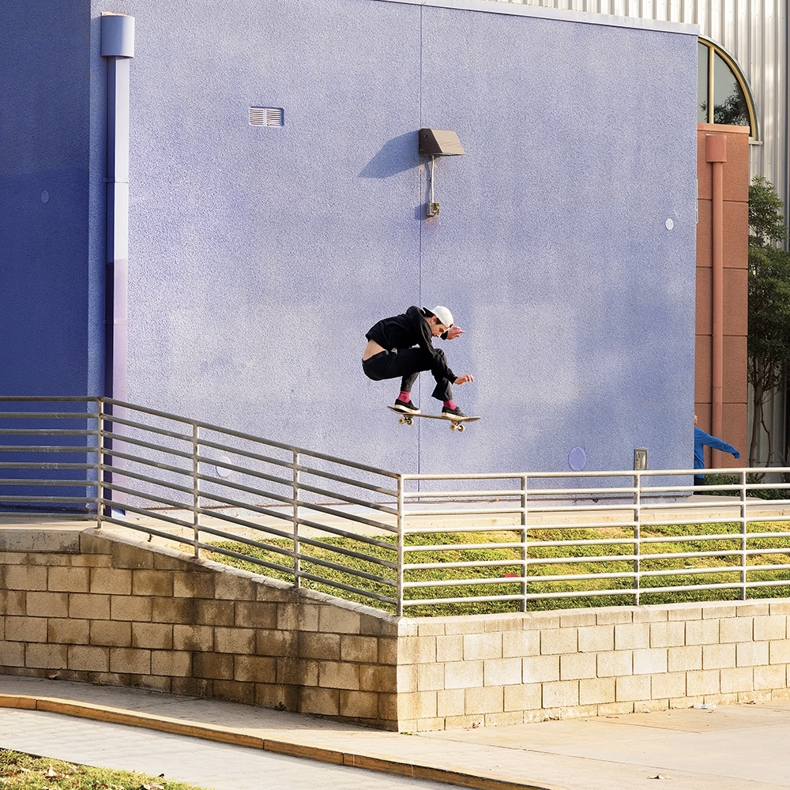
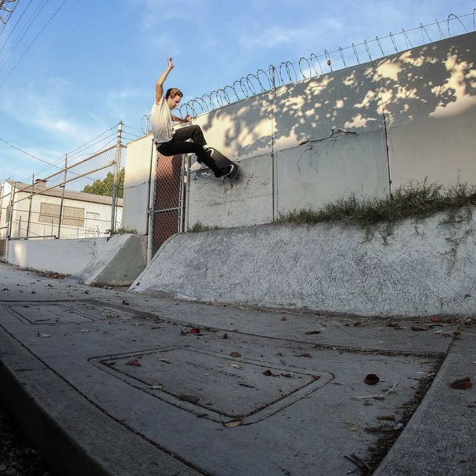
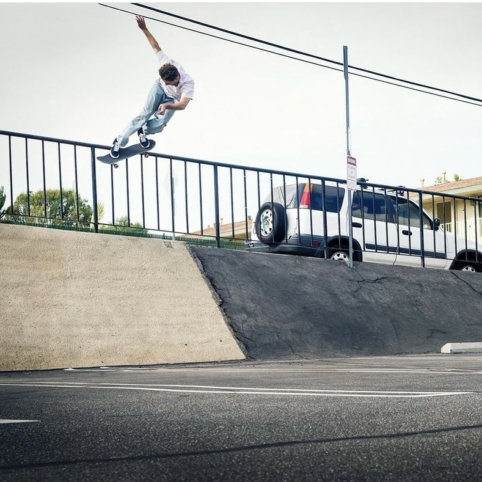
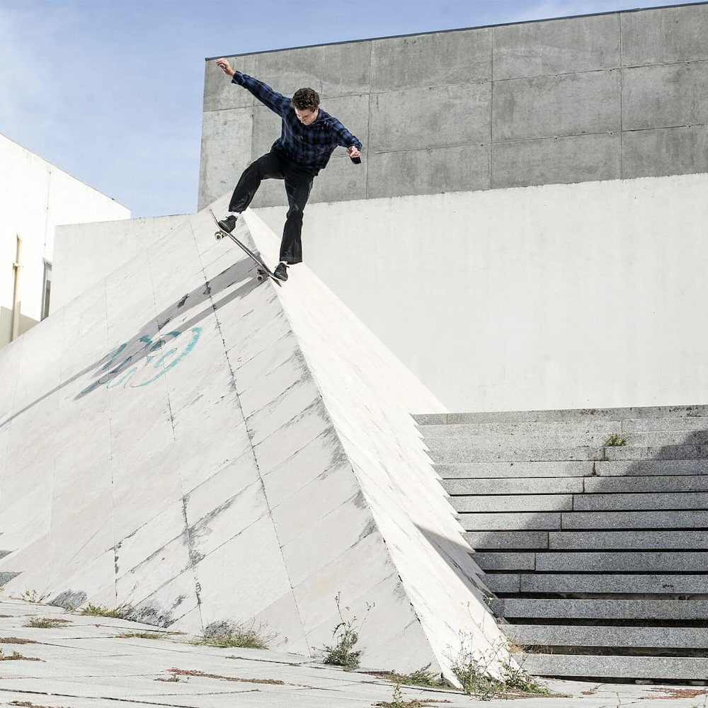

Jake Anderson seems to seek out spots that most skaters would find unskateable. And if that's not enough, the tricks he decides to try on those spots are typically the last thing you'd think is possible. That alone makes him one of the funnest skateboards to watch.
This year Jake put out a Thrasher part titled "STOP". The part features Jake charging full speed at crusty spots with confidence. This is personally one of our favorite parts to watch and we'll definitely have this one on repeat for years to come.
  